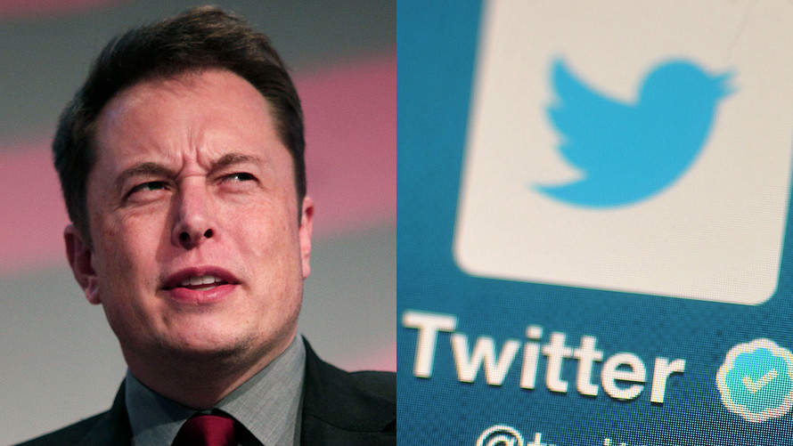

Elon Musk's SpaceX rocket lights up California sky
Elon Musk's SpaceX company has successfully launched a satellite into space from California - wowing social media users in the process.

'Think of us small people’: Tesla fans are begging Elon Musk to stop tweeting
They sound exasperated, even when they profess to be his fans. And they all seem to want just one thing: Please, stop tweeting.
The End of Snap and Tesla
If every morning the four largest retailers — Walmart, Kroger, Home Depot, CVS — met, and their sole focus was putting #5, Target, out of business, then Target would go out of business. This is happening to Snap, the #5, as the four biggest apps — Facebook, WhatsApp, Instagram, and Messenger — have their cannons squared on the “camera” company.
I Left My Big Fancy Tech Job and Wrote a Book
TSeveral years ago, I was sitting in the audience at a big tech conference, learning about a startup that made it easy for people to rent
U.S. government sides with Apple and Amazon, effectively denying Bloomberg ‘spy chip’ report
Homeland Security has said it has “no reason to doubt” statements by Apple, Amazon and Supermicro denying allegations made in a Bloomberg report published earlier this week.
Cricket great Matthew Hayden suffers spinal injuries while surfing in Queensland
Former Test opener ‘dodged a bullet’ and is recovering from head and neck injuries
Why do countries want to buy the Russian S-400?
The system is an upgrade to the S-300, which Syria recently purchased, with potential clients such as India and Turkey.
Your Work Is the Only Thing That Matters
There is a story about an exchange between Jerry Seinfeld and a young comedian.